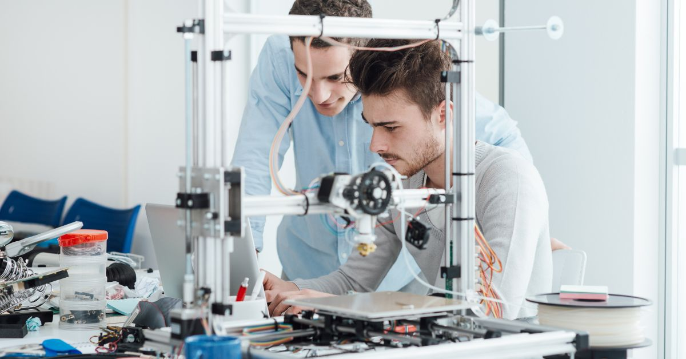
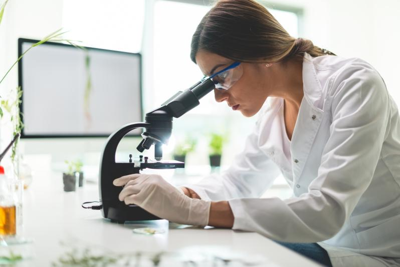

Research at VIT-AP University
Research is at the heart of VIT-AP University's academic pursuits. We believe in pushing the boundaries of knowledge and making significant contributions to various fields of study. Our research ecosystem is designed to foster innovation, collaboration, and interdisciplinary research that addresses real-world challenges.
Our faculty members are actively engaged in cutting-edge research across diverse domains, including artificial intelligence, renewable energy, nanotechnology, data science, biotechnology, and more. They collaborate with leading researchers and institutions globally, ensuring that our research remains at the forefront of technological advancements.
The university houses state-of-the-art research centers and labs equipped with advanced facilities to support research endeavors. From fundamental research to applied research, our scholars are encouraged to explore new ideas and develop solutions that have a positive impact on society and industry.
VIT-AP emphasizes the importance of student involvement in research activities. Undergraduate and postgraduate students have the opportunity to work closely with faculty mentors on research projects, gaining invaluable experience and exposure to the research process.
We also organize national and international conferences, symposiums, and workshops that provide a platform for researchers to present their findings, exchange ideas, and collaborate with peers from different institutions. These events foster a culture of intellectual exchange and promote academic networking.
Furthermore, VIT-AP has established research partnerships with industry leaders, government agencies, and research organizations. These collaborations not only provide access to funding and resources but also offer opportunities for our researchers to address real-world challenges and find practical applications for their discoveries.
Our commitment to research excellence has led to numerous patents, publications, and funded projects. We encourage an entrepreneurial spirit among our researchers, supporting the transformation of innovative ideas into impactful products and startups.
By promoting a vibrant research culture, VIT-AP University aims to contribute significantly to the advancement of knowledge, technological innovation, and societal development.

Unleashing the Power of Technology

Innovative Solutions for a Better Tomorrow

Exploring the Frontiers of Science"